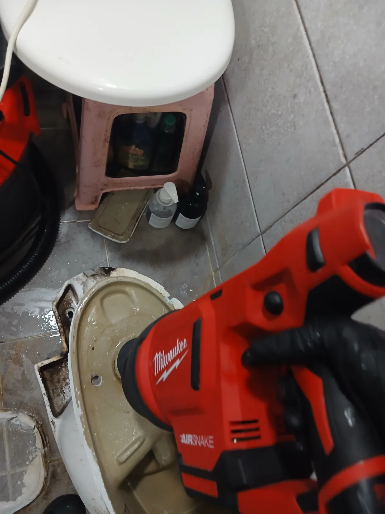
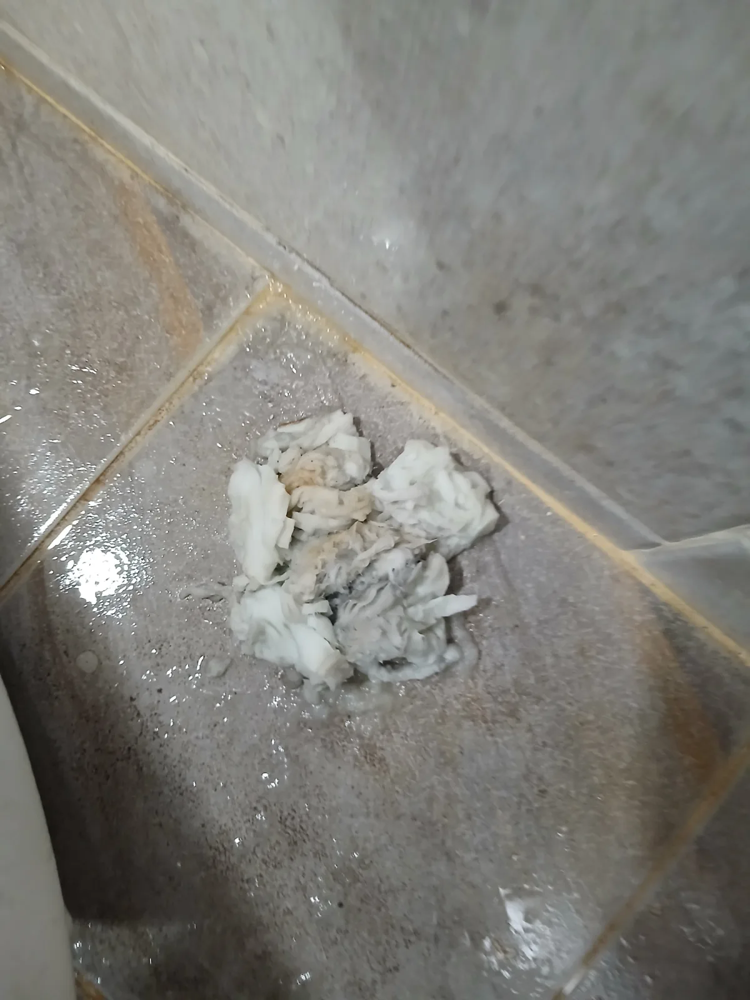

동작구 대방동 변기막힘, 현장 도착 후 진단
동작구 대방동에서 아침 일찍 변기가 막혔다는 긴급 요청이 접수됐습니다. 오전 8시경 긴급 요청에 필요한 장비를 준비해 신속하게 현장으로 출동했습니다.
변기막힘은 화장지나 물티슈, 청소포 등 이물질이 변기 내부에 걸리는 경우부터 하부 오수배관 문제까지 원인이 다양합니다. 겉으로 보이는 증상만으로 원인을 단정하기보다 현장에서 막힘 상태를 확인한 뒤 적합한 작업 방법을 선택하는 것이 중요합니다.
현장에서는 먼저 석션 장비를 이용해 변기 내부의 이물질 제거를 시도했습니다. 하지만 단순히 물길만 일시적으로 확보하는 데 그치지 않고 내부에 남아 있는 막힘 원인을 직접 확인하고 제거하기 위해 변기탈거 작업까지 이어갔습니다.
신라건축설비는 처음부터 큰 작업을 일률적으로 권하기보다 현장 상태를 먼저 확인한 뒤 필요한 작업 방법과 범위를 판단합니다. 추가 작업이 필요한 경우에는 작업 내용과 비용에 영향을 주는 요소를 안내하고 진행해 불필요한 시공을 줄이고 투명하게 작업하는 것을 중요하게 생각합니다.
1단계: 증상 확인과 필요한 장비 작업
먼저 석션 장비를 이용해 변기 내부에 걸려 있는 이물질을 흡입하는 작업을 진행했습니다. 변기막힘은 이물질의 종류와 걸린 위치에 따라 석션만으로 해결되는 경우도 있지만, 내부에 강하게 걸려 있다면 추가적인 확인과 작업이 필요할 수 있습니다.
이번 대방동 현장에서는 막힘 원인을 직접 확인하고 제거하기 위해 변기를 바닥에서 탈거했습니다. 탈거 후 내부를 확인하는 과정에서 물에 풀리지 않는 청소포가 걸려 있는 것을 발견했고 이를 직접 제거했습니다.
단순히 청소포를 오수배관 쪽으로 밀어내 일시적으로 물길만 확보하는 것이 아니라 실제 막힘의 원인이 된 이물질을 밖으로 회수하는 데 집중했습니다.

2단계: 원인 구간 처리와 정상 작동 확인
청소포를 제거한 뒤에는 Milwaukee AirSnake 에어건을 이용해 변기 내부 통수 구간을 추가로 작업했습니다. 변기를 탈거한 상태에서 내부에 남아 있을 수 있는 막힘 요소까지 정리했습니다.
이후 변기를 원위치에 재설치하고 실제로 물을 내려 통수 상태를 확인했습니다. 막힘 원인 제거부터 재설치, 최종 배수 확인까지 마친 뒤 현장을 정리했습니다.
이번 동작구 대방동 변기막힘은 한 가지 장비로 단순 관통하고 끝낸 작업이 아닙니다. 석션 작업부터 변기탈거, 청소포 원인 확인 및 직접 제거, Milwaukee AirSnake 작업, 변기 재설치와 최종 통수 확인까지 현장 상태에 맞춰 단계적으로 진행했습니다.

작업 결과와 재발 방지 안내
동작구 대방동 변기막힘 현장은 변기 내부에 걸려 있던 청소포를 직접 제거하고 석션과 에어건 작업을 진행한 뒤 변기를 재설치해 정상적인 통수 상태를 확인했습니다.
청소포나 물티슈처럼 물에 쉽게 풀어지지 않는 제품은 변기에 버리지 않는 것이 중요합니다. 얇고 작은 제품이라도 변기 내부의 굴곡진 트랩이나 오수배관에 걸리면 다른 이물질까지 붙잡으면서 심한 변기막힘이나 오수관막힘으로 이어질 수 있습니다.
변기가 막힌 상태에서 반복해서 물을 내리면 수위가 올라가 오수가 넘치는 상황으로 이어질 수 있습니다. 물이 정상적으로 빠지지 않는 증상이 나타났다면 반복적인 물내림보다 정확한 막힘 상태와 원인을 확인하는 것이 추가 피해를 줄이는 데 도움이 됩니다.
변기막힘 작업은 고객 입장에서 현장에서 작업 범위가 얼마나 커지는지, 추가 비용이 발생하는지가 걱정될 수 있습니다. 신라건축설비는 먼저 현장 상태를 확인하고 필요한 작업 범위와 방법, 비용에 영향을 주는 요소를 설명한 뒤 실제 필요한 범위에서 작업하는 투명한 진행 과정을 중요하게 생각합니다.
작업 후 시공 부위와 관련해 이상 증상이 나타날 경우 기존 작업 내용을 바탕으로 상태를 확인하고 필요한 사후 대응을 진행합니다. 단순히 변기를 한 번 뚫고 끝내는 것이 아니라 원인 확인부터 작업, 최종 통수 점검과 사후관리까지 책임 있게 대응하는 것이 기본 작업 원칙입니다.
신라건축설비는 긴급한 변기막힘 요청에 대응할 수 있도록 24시간 출동 체계를 운영하고 있습니다. 이번 대방동 사례처럼 아침 일찍 발생한 변기막힘에도 신속하게 대응하며, 동작구를 비롯한 서울 전 지역과 경기권 현장에 출동하고 있습니다.
신라건축설비는 변기막힘·싱크대막힘·하수구막힘을 전문적으로 해결하는 서울·경기권 배관 전문업체입니다. 이번 현장에서는 석션 장비와 Milwaukee AirSnake를 사용했으며, 다른 막힘 현장에서는 원인과 배관 상태에 따라 배관 내시경, 관통기, RIDGID 샤프트, 고압세척 등 다양한 전문 장비와 공법을 선택해 운용하고 있습니다.
또한 점검 과정에서 단순한 변기막힘이 아닌 오수관이나 공용배관 문제가 확인될 경우 배관 진단부터 보수·교체 및 대형 배관공사까지 연계해 자체 대응할 수 있습니다. 생활 속 막힘을 빠르고 전문적으로 해결하는 것을 중심으로 더 복잡한 배관 문제까지 한 번에 대응할 수 있는 것이 신라건축설비의 강점입니다.
최종 조치: 석션 장비를 이용해 막힘 제거를 시도한 뒤 변기를 탈거해 내부 상태를 확인했습니다. 변기 내부에서 막힘의 원인이 된 청소포를 직접 제거하고 Milwaukee AirSnake 에어건으로 내부 통수 구간을 추가 작업한 뒤 변기를 재설치하고 정상적인 배수 상태를 확인했습니다.
현장 방문 전 확인하는 비용과 작업 범위
신라건축설비는 현장 증상과 배관 구조를 확인한 뒤 필요한 작업과 예상 비용을 안내합니다. 단순 관통으로 해결되는지, 배관내시경·석션·고압세척 또는 변기 탈거가 필요한지는 현장 상태에 따라 달라집니다. 출장비와 야간 작업비, 추가 장비 비용이 발생할 수 있는 경우 작업 전에 먼저 설명하고 동의를 받은 범위에서 진행합니다.
업체를 선택할 때 확인할 사항
무조건적인 ‘0원’ 표현보다 실제 작업 범위, 추가 비용 조건, 사용 장비와 사후 대응 기준을 확인하는 것이 중요합니다. 해결되지 않았을 때의 비용 기준과 작업 후 동일 증상 발생 시 점검 범위를 사전에 문의해두면 불필요한 분쟁을 줄일 수 있습니다.
동작구 변기막힘 자주 묻는 질문
변기를 꼭 탈거해야 하나요?
아침 일찍 변기가 정상적으로 내려가지 않는다는 긴급 요청이 접수됐습니다. 변기를 정상적으로 사용하기 어려운 상황이었던 만큼 필요한 장비를 준비해 신속하게 대방동 현장으로 출동했습니다.처럼 증상이 나타나더라도 원인은 현장마다 다를 수 있습니다. 장비와 배관 구조를 확인한 뒤 필요한 작업 범위를 안내합니다.
작업 전 비용을 알 수 있나요?
작업 전 증상과 현장 여건을 확인해 예상 범위와 비용을 먼저 안내합니다. 변기 탈거, 장비 추가 투입 또는 공용배관 작업이 필요한 경우 고객 동의 없이 임의로 진행하지 않습니다.
같은 증상이 다시 생기면 어떻게 하나요?
완료 후 정상 작동을 함께 확인하고 작업 범위에 따른 사후 안내를 드립니다. 동일 증상이 반복되면 현장 기록을 기준으로 원인을 다시 점검합니다.
변기막힘 서울·경기 출동지역
신라건축설비는 동작구 대방동 현장을 포함해 서울 25개 구와 경기도 31개 시·군의 배관 문제를 상담합니다. 현장 거리와 기사 배정 상황에 따라 출동 가능 여부를 먼저 안내드립니다.
서울 전 지역
강남구 · 강동구 · 강북구 · 강서구 · 관악구 · 광진구 · 구로구 · 금천구 · 노원구 · 도봉구 · 동대문구 · 동작구 · 마포구 · 서대문구 · 서초구 · 성동구 · 성북구 · 송파구 · 양천구 · 영등포구 · 용산구 · 은평구 · 종로구 · 중구 · 중랑구
경기도 주요 출동지역
수원시 · 용인시 · 고양시 · 화성시 · 성남시 · 부천시 · 남양주시 · 안산시 · 평택시 · 안양시 · 시흥시 · 파주시 · 김포시 · 의정부시 · 광주시 · 하남시 · 광명시 · 군포시 · 양주시 · 오산시 · 이천시 · 안성시 · 구리시 · 의왕시 · 포천시 · 양평군 · 여주시 · 동두천시 · 과천시 · 가평군 · 연천군